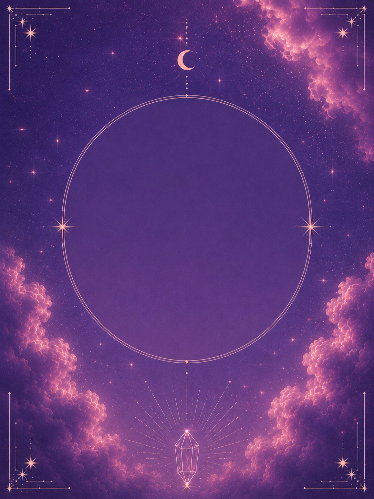

SOFTWARE &
TOOLS
AI-assisted software, utilities, prototypes and small tools built from an idea into something functional.
I use AI less like a shortcut and more like a creative laboratory.
make something that doesn't exist yet
Not one kind of work. Not one tool. A growing archive of things imagined, generated, designed, coded and built with AI somewhere in the process.
AI-assisted software, utilities, prototypes and small tools built from an idea into something functional.
Interactive pages, experimental interfaces and websites built with AI-assisted creative coding.
Useful systems, creative resources and repeatable tools designed to make work easier or more interesting.
Generative images, concept art, visual worlds, campaigns and experiments where prompting becomes part direction, part iteration.
This is where the polished output stops and the experiments begin — unfinished ideas, strange tests and things that taught me something.

01What I was trying, what changed, what failed and what became unexpectedly interesting.
One idea taken through multiple tools, styles, prompts or formats until it became something else.
The experiment that wasn't supposed to work — which is usually why it deserves to be here.
The tools will change. That's kind of the point. We can add the actual AI platforms, coding environments and creative software you use here.
Your two AI certificates can live here — not as boring résumé attachments, but as part of the story of how you keep learning emerging tools.
Good. I wasn't done experimenting anyway.
← BACK TO ALL MY WORLDS 01AI AD
01AI AD 02CLAUDE
02CLAUDE